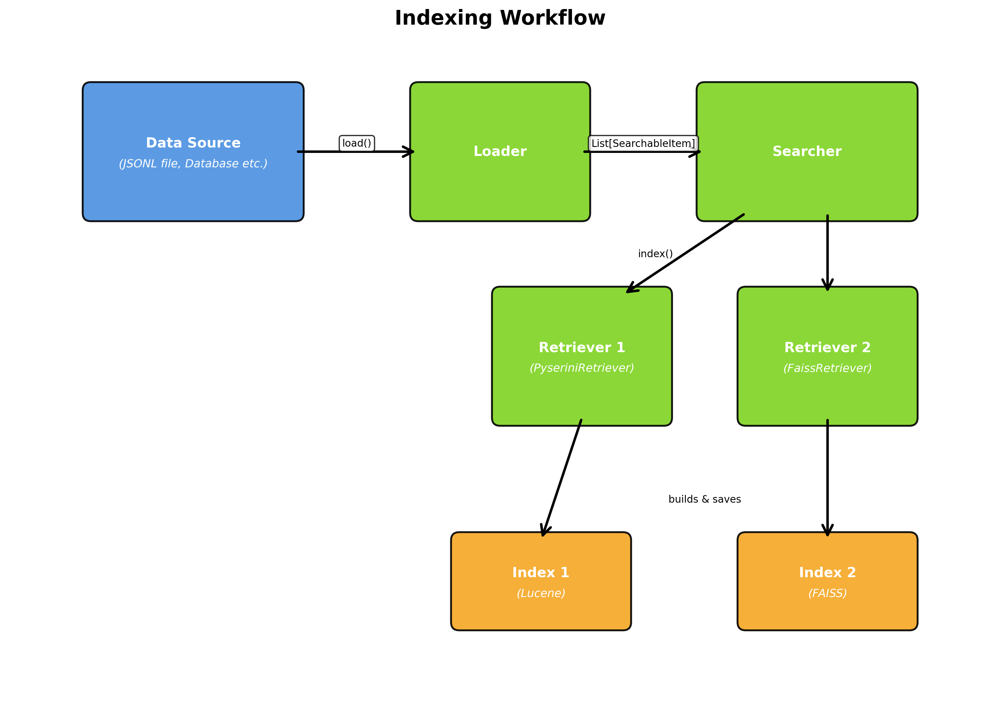
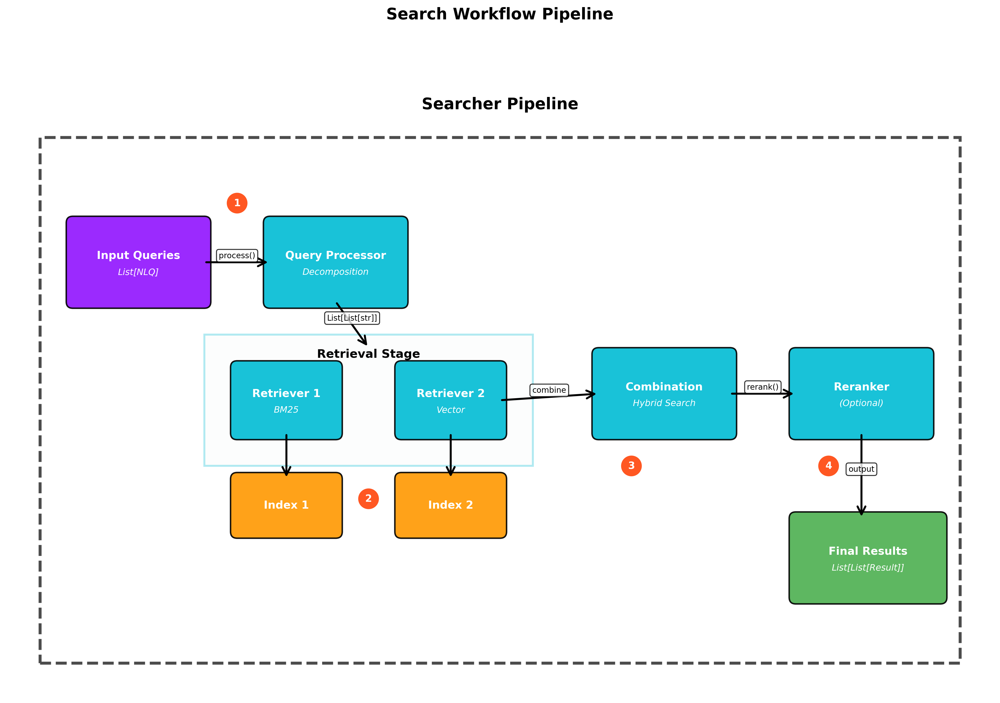
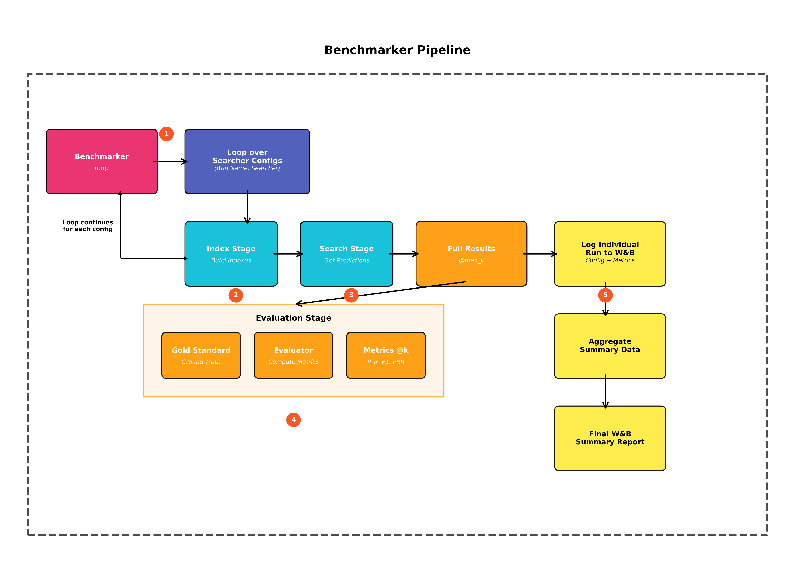

Developer Onboarding Guide¶
Welcome to the developer guide for the nlp_retrieval framework.
This document provides an overview of the framework's architecture and a step-by-step guide for extending it with new components (like loaders, retrievers, or rerankers) and benchmarking their performance.
Table of Contents¶
- Framework Overview
- Core Principles
- How the Service Uses the Framework
- Directory Structure
- Core Data Models
- System Architecture & Workflows
- Core Components & Interfaces
- Available Components
- Indexing Workflow
- Search Workflow
- Part 1: Adding a New Component
- General Steps
- Component-Specific Guides
- Assembling a Pipeline
- Supporting a New File Format in the Service
- Part 2: Evaluating Your New Component
- Key Evaluation Classes
- The Matching Logic
- How to Run a Benchmark
- Interpreting the Output
- Table Retrieval Benchmarks
1. Framework Overview¶
The nlp_retrieval module provides a modular, configurable, and extensible framework for building and benchmarking end-to-end text retrieval pipelines. It is designed around a "composition over inheritance" model, where a central Searcher orchestrates various independent components to perform indexing and searching tasks.
Core Principles¶
The framework is built on a few key principles:
- Modularity: Each component is a self-contained, swappable Python class.
- Clear Interfaces: Components inherit from an Abstract Base Class (ABC) that defines a strict contract for its methods.
- Standardized Data Flow: We use Pydantic models (
SearchableItem,RetrievalResult) to pass data between components. - Batch-First Design: All components are designed to operate on batches (
List) of queries or results, enabling efficient processing.
How the Service Uses the Framework¶
The Cross-Dataset Discovery API is built on this framework. It uses a Searcher with a single retriever, QdrantHybridRetriever (sparse, dense and hybrid search in Qdrant), and no query processor or reranker. For ingestion it uses the file-format loaders (CsvLoader, XlsxLoader, JsonLoader, DocxLoader, PptxLoader, IpynbLoader, SqlDbLoader, ChunkedContentLoader). See Architecture.
The other components (FAISS, Pyserini/BM25, ColBERT, the rerankers, query processors, and the table retrieval methods) are used for research and benchmarking.
Directory Structure¶
All retrieval-related code resides in cross_dataset_discovery/darelabdb/nlp_retrieval/.
nlp_retrieval/
├── core/ # Pydantic models
├── loaders/ # Reads data from sources
├── user_query_processors/ # Processes raw user queries
├── retrievers/ # Indexes data and retrieves candidates
├── rerankers/ # Re-scores and ranks candidates
├── evaluation/ # Tools for calculating metrics
├── benchmarking/ # Orchestrator for running benchmarks
├── table_retrieval_scripts/ # Unified indexing/benchmark scripts for table retrieval
├── docs/ # Framework documentation
└── searcher.py # The main pipeline orchestrator
Each component type has its ABC in its own folder (loaders/loader_abc.py, retrievers/retriever_abc.py, rerankers/reranker_abc.py, user_query_processors/query_processor_abc.py).
Core Data Models¶
Before you start, familiarize yourself with the two fundamental data models defined in darelabdb/nlp_retrieval/core/models.py:
SearchableItem: The canonical representation of a single piece of data to be indexed.item_id: str: A unique identifier for the item.content: str: The main text content used for retrieval.metadata: Dict: A dictionary for any associated metadata.RetrievalResult: Represents a single item returned by a search.item: SearchableItem: The retrieved item.score: float: The relevance score assigned by the retriever or reranker.
2. System Architecture & Workflows¶
The framework is built upon a set of abstract base classes (ABCs), each defining a specific role in the retrieval pipeline. The Searcher and Benchmarker classes orchestrate the interaction between these components.
Core Components & Interfaces¶
BaseLoader: Loads data from a source (e.g., file, database) and converts it intoSearchableItems.BaseUserQueryProcessor: Transforms a batch of user queries into a format suitable for retrieval (e.g., decomposition, keyword extraction).BaseRetriever: Manages the indexing ofSearchableItems and the retrieval of candidate results.BaseReranker: Re-scores a list of candidateRetrievalResults to improve ranking quality.
Available Components¶
| Type | Classes |
|---|---|
| Loaders (files) | CsvLoader, XlsxLoader, JsonLoader, DocumentJsonLoader, DocxLoader, PptxLoader, IpynbLoader, ChunkedContentLoader, DataframesLoader, TableJsonLoader |
| Loaders (databases) | SqlDbLoader (SQLAlchemy URL) |
| Loaders (table retrieval methods) | AutoDDGLoader, BirdieLoader, JarTableLoader, PneumaLoader, QGpTLoader, TableRAGLoader |
| Retrievers | QdrantHybridRetriever, FaissRetriever (dense), PyseriniRetriever (BM25), ColBERTRetriever, RagatouilleColbertRetriever, MinHashLshRetriever, BirdieRetriever, PneumaRetriever, TableRAGRetriever |
| Rerankers | MxbaiCrossEncoderReranker, BgeReranker, SentenceTransformerCrossEncoderReranker, BiEncoderReranker, LLMReranker, BridgeReranker, JarMIPReranker, PneumaReranker |
| Query processors | PassthroughQueryProcessor (default), DecompositionProcessor, KeywordExtractorProcessor, KeyBERTProcessor, NERQueryProcessor, NgramQueryProcessor, JarDecompositionProcessor, TableRAGQueryProcessor |
Indexing Workflow¶
The indexing process is initiated by the Searcher.index(loader, output_path) method.
- Load: The loader (e.g.,
JsonLoader) loads the data into aList[SearchableItem]. - Index: The
Searcherpasses this list to theindex()method of each configured retriever (e.g.,PyseriniRetriever,FaissRetriever), each with its own subdirectory ofoutput_path, named after the retriever's class. - Store: Each retriever builds its specific index (e.g., a Lucene index, a FAISS vector index) and saves it in that subdirectory.
QdrantHybridRetriever is the exception: it stores everything in Qdrant and ignores output_path.

Figure 1: The indexing workflow showing data flow from source through loader to multiple retrievers creating their respective indexes.Search Workflow¶
The search process is initiated by the Searcher.search(nlqs, output_path, k, **kwargs) method.
- Process Query: The input queries are passed to the configured
BaseUserQueryProcessor(PassthroughQueryProcessorif none is set). - Retrieve: The
Searcherpasses the processed queries to each configured retriever, asking each fork × reranker_multipliercandidates (default multiplier3). Extra keyword arguments are passed through to the retrievers;QdrantHybridRetrieveruses them forsearch_modeandfilters. - Combine (Hybrid Search): The
Searchercollects the results from all retrievers into a single pool of candidates, deduplicated byitem_id. - Rerank (Optional): If a
BaseRerankeris configured, this combined pool is passed to itsrerank()method for re-scoring. - Return: The final results are returned, sorted by score and truncated to
kper query.

Figure 2: The complete search pipeline from query input through processing, retrieval, combination, and optional reranking.3. Part 1: Adding a New Component¶
General Steps¶
- Identify the Component Type: Determine which category your new class falls into:
loaders,user_query_processors,retrievers, orrerankers. - Create the File: Add a new Python file in the appropriate directory (e.g.,
cross_dataset_discovery/darelabdb/nlp_retrieval/retrievers/my_new_retriever.py). - Inherit from the ABC: Your new class must inherit from the correct Abstract Base Class (e.g.,
BaseRetrieverfromretriever_abc.py). - Implement All Abstract Methods: Implement every method marked with
@abstractmethodin the parent ABC. Make sure your method signatures match the ABC exactly. - Use Core Data Models: Your component must accept and/or return the Pydantic models (
SearchableItem,RetrievalResult) as defined in the ABC contract.
Component-Specific Guides¶
Creating a New Loader¶
- Inherit from:
BaseLoader - Implement:
__init__(self, ...): Accept necessary parameters, like file paths or connection details.load(self) -> List[SearchableItem]: Read your data source and create a list ofSearchableItemobjects.- Optionally override:
load_stream(self) -> Generator[SearchableItem, None, None]: Yield items one at a time instead of building the whole list. The default implementation callsload(). The service's ingestion usesload_stream(), so override it for any loader that can produce large amounts of data.
Creating a New User Query Processor¶
- Inherit from:
BaseUserQueryProcessor - Implement:
__init__(self, ...): Accept any configuration for your processing logic.process(self, nlqs: List[str]) -> List[List[str]]: Receives a list of raw queries and returns a list of lists, where each inner list contains the processed strings (e.g., sub-queries, keywords) for one input query. The output must have the same length asnlqs.
Creating a New Retriever¶
- Inherit from:
BaseRetriever - Implement:
__init__(self, ...): Initialize your retrieval model, parameters, etc.index(self, items: List[SearchableItem], output_path: str) -> None: Build your search index from the items'content, store whatever is needed to rebuild theSearchableItems at retrieval time, and save all index files insideoutput_path.retrieve(self, processed_queries_batch: List[List[str]], output_path: str, k: int, **kwargs) -> List[List[RetrievalResult]]: Load the index and process all sub-queries of each original query. Return one aggregated, deduplicated list ofRetrievalResultobjects per original query (the output must have the same length asprocessed_queries_batch). Use**kwargsfor retriever-specific options.
Creating a New Reranker¶
- Inherit from:
BaseReranker - Implement:
__init__(self, ...): Initialize your reranking model.rerank(self, nlqs: List[str], results_batch: List[List[RetrievalResult]], k: int) -> List[List[RetrievalResult]]: For each query and its candidates, compute new scores, sort the results in descending order, and truncate them to the topk. The output must have the same length asnlqs.
Assembling a Pipeline¶
Once you have created your custom component, you can use it in a Searcher pipeline.
from darelabdb.nlp_retrieval.searcher import Searcher
from darelabdb.nlp_retrieval.loaders.json_loader import JsonLoader
from darelabdb.nlp_retrieval.retrievers.dense_retriever import FaissRetriever
# Import your new custom component
from darelabdb.nlp_retrieval.rerankers.my_reranker import MyReranker
# 1. Initialize the components
my_loader = JsonLoader(
file_path="path/to/data.jsonl", # .json (array) or .jsonl
item_id_prefix="my-dataset:data.jsonl",
content_fields=["text"],
)
my_retriever = FaissRetriever(model_name_or_path="BAAI/bge-m3")
my_custom_reranker = MyReranker(model_name="some-model") # Your new reranker
# 2. Assemble the Searcher
searcher = Searcher(
retrievers=[my_retriever],
reranker=my_custom_reranker,
)
# 3. Build the index
INDEX_DIR = "./my_index"
searcher.index(loader=my_loader, output_path=INDEX_DIR)
# 4. Search
queries = ["what is the capital of france?", "what is the best gpu for gaming?"]
results = searcher.search(nlqs=queries, output_path=INDEX_DIR, k=5)
print(results)
Supporting a New File Format in the Service¶
To let the API ingest a new file format:
- Create a loader for it, as described above, and implement
load_stream(). - Add a branch for the format's
original_formatvalue in_build_items()indarelabdb/api_datagems_cross_dataset_discovery/app/main.py, creating your loader with the file's path and the sharedmetadata(dataset_id,file_object_id,original_filename). - Document the format in the API Overview.
4. Part 2: Evaluating Your New Component¶
After creating a new component, the next step is to measure its performance. The framework provides tools to run automated benchmarks and calculate standard information retrieval metrics.

Figure 3: The benchmarking pipeline showing the complete flow from configuration through evaluation and logging.Key Evaluation Classes¶
RetrievalEvaluator(darelabdb/nlp_retrieval/evaluation/evaluator.py): The core engine for calculating metrics such as Precision, Recall, F1-Score and Perfect Recall.Benchmarker(darelabdb/nlp_retrieval/benchmarking/benchmarker.py): The high-level orchestrator. It runs differentSearcherconfigurations, calls theRetrievalEvaluator, and logs results to the console and to Weights & Biases.
The Matching Logic¶
This is the most important concept in our evaluation system. A predicted item is considered a "correct hit" if its metadata contains all the key-value pairs of a gold standard item's metadata.
Example:
- Gold Standard Metadata:
{'page_title': 'Mashable', 'source': 'some_sentence'} - Prediction 1 Metadata:
{'page_title': 'Mashable', 'source': 'some_sentence', 'value': 'xyz'}→ MATCH (a superset) - Prediction 2 Metadata:
{'page_title': 'Mashable', 'source': 'another_sentence'}→ NO MATCH
The evaluator also handles granularity automatically. When computing metrics @k, k refers to the number of unique entities, as defined by the gold standard's metadata keys. For example, if the gold standard metadata is {'page_title': 'A'}, the predictions are first deduplicated to keep only the first item for each unique page_title, and the metrics are calculated on that list.
How to Run a Benchmark¶
The table retrieval script table_retrieval_scripts/run_benchmark.py is a complete example of setting up and running an evaluation.
Step 1: Prepare the Corpus Loader¶
The Benchmarker does not depend on your data's format. It only needs an initialized loader whose load() method returns a List[SearchableItem].
from darelabdb.nlp_retrieval.loaders.json_loader import JsonLoader
loader = JsonLoader(
file_path="path/to/corpus.jsonl",
item_id_prefix="corpus",
content_fields=["title", "abstract"], # each field becomes a separate item
record_id_field="id",
metadata_fields=["page_title", "source"], # None = all remaining fields
)
Step 2: Prepare Queries and Gold Standard¶
The Benchmarker does not read a specific benchmark file. You create two lists in memory:
queries: List[str]: A list of query strings.gold_standard: List[List[RetrievalResult]]: A parallel list, where each inner list contains the correctRetrievalResultobjects for the corresponding query.
For the gold standard, only the metadata of each item is used for matching; item_id and content can be placeholders:
from darelabdb.nlp_retrieval.core.models import RetrievalResult, SearchableItem
gold_item = SearchableItem(
item_id="placeholder",
content="placeholder",
metadata={"page_title": "Mashable", "source": "some_sentence"},
)
gold_standard_for_one_query = [RetrievalResult(item=gold_item, score=1.0)]
Step 3: Configure Your Searcher Pipelines¶
Create an initialized Searcher instance for each configuration you want to test, including your new component.
from darelabdb.nlp_retrieval.retrievers.bm25_retriever import PyseriniRetriever
# Configuration 1: Baseline
bm25_searcher = Searcher(retrievers=[PyseriniRetriever()])
# Configuration 2: Your new component
my_new_searcher = Searcher(retrievers=[MyNewRetriever()])
# Create a list of named configurations for the Benchmarker
searcher_configs = [
("BM25_Baseline", bm25_searcher),
("My_New_Retriever", my_new_searcher),
]
PyseriniRetriever requires a Java 21 JDK.
Step 4: Initialize and Run the Benchmarker¶
Pass all the prepared objects to the Benchmarker and call .run().
from darelabdb.nlp_retrieval.benchmarking.benchmarker import Benchmarker
from darelabdb.nlp_retrieval.evaluation.evaluator import RetrievalEvaluator
evaluator = RetrievalEvaluator()
benchmarker = Benchmarker(
searcher_configs=searcher_configs,
evaluator=evaluator,
loader=loader,
queries=queries,
gold_standard=gold_standard,
k_values=[1, 5, 10],
output_path="./benchmark_results",
use_wandb=True,
wandb_project="my-retrieval-project",
wandb_entity="my-username",
)
benchmarker.run()
Interpreting the Output¶
- Console Output: For each configuration, the indexing status, the search speed (queries per second), the metrics for the full retrieved set, and the metrics
@kfor each value ink_values. At the end, a summary table compares all runs at the largestk. - Weights & Biases (W&B) Dashboard: If
use_wandb=True, theBenchmarkercreates:- one run per configuration, with the configuration of all its components, the final metrics, and a
performance_metrics_at_ktable; - a
Benchmark_Summary_Reportrun, with abenchmark_summary_tablecomparing all configurations.
- one run per configuration, with the configuration of all its components, the final metrics, and a
5. Table Retrieval Benchmarks¶
The framework includes a suite for evaluating table retrieval methods, documented in detail in nlp_retrieval/docs/TABLE_RETRIEVAL.md.
- Methods: standard baselines (
bm25,dense,colbert) and LLM-augmented or specialized methods (autoddg,birdie,jar,pneuma,qgpt,tablerag). - Data: The benchmarks are stored in the
DARELab/table_retrieval_dataHugging Face dataset repository. Each benchmark has acorpus.json(the tables) and aqueries.json(queries with their goldtable_ids). Only the requested benchmarks are downloaded and cached. - Scripts:
table_retrieval_scripts/run_indexing.pybuilds the indexes (and caches any LLM-generated augmentations), andtable_retrieval_scripts/run_benchmark.pyevaluates them. Both take--method <name>or--method all. They load each method's models once and process all benchmarks with it before moving to the next method, so that large LLMs do not exhaust GPU memory. - Benchmark registry: The scripts load the benchmarks through the
darelabdb.utils_datasetspackage of the DARELab monorepo (table_retrieval_benchmarks.py), where new benchmarks are registered.